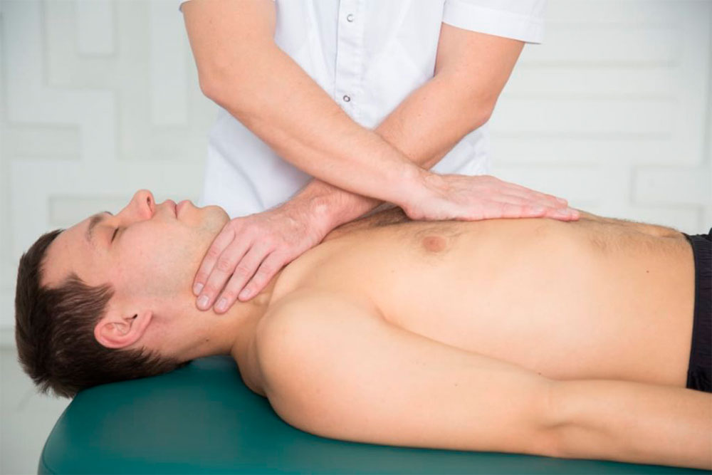

Что такое остеопатическое лечение — определение, законы, история становлени
Tермин «остеопатия» состоит из двух греческих слов: кость
и болезнь. Многие трактуют его, как что–то, связанное с
заболеваниями костей и суставов, а остеопатов приравнивают
к мануальным терапевтам или костоправам.
На самом деле он подразумевает, что причина любых заболеваний
(не только опорно–двигательного аппарата)
кроется в нарушении целостности анатомической структуры организма.
Разберем подробнее, что это значит.
Законы остеопатии — на чем основан ее лечебный эффект
Согласно первому закону остеопатии тело, душа и разум — это три составляющие одного целого. Сбои в работе одной из них отражаются на двух других:
— Повреждение отдельных костей, мышц или нервов
ведет к нарушению работы других органов и организма в целом.
Если у человека болит колено, то он инстинктивно начинает
щадить его — не полностью наступает на больную ногу. Со
временем это может вызвать перекос таза и проблемы с позвоночником.
А на фоне постоянной боли появляется раздражительность, апатия или
даже депрессия.
— Психоэмоциональные расстройства приводят к заболеваниям внутренних оргонов.
Хронический стресс может спровоцировать гастрит,
язвенную болезнь и другие болезни. Даже невыраженные,
подавленные, «давно забытые» негативные эмоции могут вызвать,
например, боль в шее.
Первая задача остеопатического лечения: найти причину заболевания и воздействовать на нее, а не на симптом болезни. Это его главное отличие от традиционной медицины.
Например, у пациента болит голова. Терапевт или невролог,
скорее всего, назначит ему обезболивающие таблетки. Они
снимают боль, но не устраняют ее причину. Поэтому боль
вернется снова и таблетки придется пить постоянно.
Остеопат будет искать первопричину боли, чтобы устранить ее.
В ходе обследования он может выявить, что причина головных болей
у данного пациента — нарушение структуры костей черепа и
позвоночника, что препятствует нормальному распределению
спинномозговой жидкости (ликвора).
С восстановлением нормальной структуры исчезнут блоки
и застои ликвора, а с ними — головная боль. Причем она
уйдет навсегда и без лекарств.
В остеопатии выделяют 3 подхода:
— Висцеральный — по работе с внутренними органами;
— Краниосакральный — по работе с нервной системой и головой;
— Структуральный — по работе с опорно–двигательным аппаратом.
Для выявления истинной причины заболевания и ее устранения врачи
клиники «Качество жизни» в равной степени могут использовать
все 3 подхода — все зависит от конкретного пациента и его заболевания.
Второй закон остеопатии гласит — функция и структура любого органа зависят друг от друга, но функция главнее.
Организм каждого человека подстраивается под образ жизни,
род занятий и другие факторы. Это значит, что структура
органов может меняться под действием выполняемой ими функции.
Например, все гимнастки очень гибкие. Это связано с
гипермобильностью (сверх подвижностью) их суставов,
которая не свойственна обычным людям. Т.е. в данном
случае гибкость — это результат изменения структуры
органа (сустава и его связок) для лучшего выполнения
определенной функции (сложных гимнастических упражнений).
Такая гибкость абсолютно бесполезна в обыденной жизни
и даже опасна — у гимнасток высокий риск травм, нарушений
осанки и т.д. Но она просто необходима для достижения
спортивных результатов.
Поэтому если гимнастку беспокоит боль, то ее лечение должно
быть направлено на сохранение функции, а не возвращение
нормальной структуры суставам. Иначе это отразится
на ее спортивных достижениях.
Этот подход действует в любом другом случае. У беременной
болит поясница из–за того, что изменилась структура
позвоночника. Но эти изменения необходимы, чтобы женщина
выполнила функцию — выносила ребенка. Поэтому лечить
ее следует с позиции, что функция важнее структуры,
а не наоборот.
В клинике «Качество жизни» не купируют отдельные симптомы.
Здесь врачи подходят комплексно к каждому пациенту,
тщательно обследуют его, выясняют индивидуальные
особенности организма и болезни и только потом
подбирают лечение.
Третий закон остеопатии — для исцеления не нужны лекарства или хирургические операции.
У каждого человека достаточно внутренних резервов для
восстановления даже после самых тяжелых заболеваний
и профилактики их развития — нужно только их найти и активизировать.
Простой пример — если заядлый курильщик расстанется
с этой вредной привычкой, то через несколько месяцев
он будет чувствовать себя значительно лучше. Он забудет
про кашель по утрам, одышку, неприятный привкус во рту,
нездоровый цвет лица, круги под глазами — все это исчезнет
само собой, без приема лекарственных препаратов.
Отсюда следующая задача остеопатического лечения:
стимулировать организм к выздоровлению за счет
использования своего собственного потенциала — указать
ему правильный путь к здоровью.
Основа здоровья — это движение. В нашем организме
каждый орган, каждая клетка движутся: мышцы сокращаются,
сердце пульсирует, легкие расширяются, кровь и лимфа
текут по сосудам и т.д. Любое нарушение подвижности
ведет к блокам, застоям и нарушению функций отдельных
органов и организма в целом.
Для выздоровления достаточно создать правильные
условия — вернуть органам и тканям их подвижность,
восстановить нормальное кровоснабжение. И остеопату
для этого не нужны ни специальные инструменты, ни
лекарственные препараты. Его руки чутко улавливают
любые сбои. Мягко воздействуя на проблемные зоны,
он помогает организму пациента мобилизовать свои
ресурсы и поправиться.
Врач–остеопат ищет и устраняет истинную причину болезни,
активизирует собственные силы организма пациента и
помогает ему адаптироваться к неблагоприятным факторам.

История развития и становления
Остеопатия возникла в конце XIX века в США и относится
к мануальным направлениям медицины. Она регулируется
Всемирной организацией здравоохранения и уже более 100
лет признана в странах Европы, а не только в Америке.
В России до 90–х годов прошлого столетия об остеопатии
вообще толком ничего не знали — ее не преподавали
в медуниверситетах, о ней не говорили на конференциях
и не писали в медицинских изданиях. Но высокая
эффективность остеопатического лечения способствовала
быстрому развитию этой науки.
Сегодня остеопатия в России — это официальная
медицинская специальность, такая же, как терапия
или хирургия, а врачи–остеопаты — сертифицированные специалисты.
Чтобы получить специальность по остеопатии, нужно:
— окончить медицинский институт или университет (это 6 лет обучения);
— получить специализацию по одной из лечебных специальностей (стать педиатром, гинекологом, травматологом или любым другим врачом — около 2 лет);
— пройти обучение в специализированной остеопатической школе (еще около 4 лет).
В клинике «Качество жизни» работают остеопаты, которые
в совершенстве знают анатомию и физиологию, особенности
течения всех заболеваний и постоянно повышают свою квалификацию.
За последние 10–12 лет остеопатия в нашей стране получила мощный толчок к развитию:
— создана Российская ассоциация остеопатов, в которую входит более 1000 специалистов;
— регулярно публикуется Российский остеопатический журнал;
— появились учебники и клинические рекомендации.
Но несмотря на это о науке до сих пор можно встретить ряд
противоречивых мнений. Многие из них сохранились с тех времен,
когда об остеопатии не было ясного представления,
и не соответствуют действительности.
Остеопатия — где правда, а где — вымысел
Рассмотрим наиболее частые заблуждения об остеопатическом лечении.
Заблуждение №1: Остеопатия не оказывает лечебного эффекта.
Есть мнение, что остеопатия эффективна, если его применяют
в комплексе с традиционной медициной. Как самостоятельный
способ лечения она, в лучшем случае, просто не навредит. Оно ошибочно.
На сегодня доказано, что причина любых проблем
со здоровьем связана с нарушением физиологической
подвижности. Этот факт подтверждает Российская академия наук.
Если кишечник не будет проталкивать пищевой комок, будет запор.
Если грудная клетка не будет расширяться, то не произойдет вдох.
Если кровь не будет двигаться по сосудам, то органы не получат питательные вещества и кислород.
Если мозг не пошлет импульс, чтобы вызвать эти движения, то наступит болезнь или даже смерть.
Восстановление нормальной подвижности органов и тканей организма позволяет остеопатии:
— восстановить нормальный кровоток, в т.ч. мозговой;
— восстановить подвижность суставов;
— снизить боль любого происхождения, вплоть до полного ее устранения;
— нормализовать обмен веществ;
— нормализовать гормональный фон;
— улучшить циркуляцию лимфы;
— убрать спазм.
Остеопатия в силу особенностей своих техник не просто
лечит многие заболевания. Она способна выявить их на
самых ранних этапах или вовсе предотвратить.
Заблуждение №2: Остеопатия — это то же самое, что мануальная терапия.
Эти два направления действительно часто путают,
ведь и мануальный терапевт, и остеопат лечит руками. Но между ними огромная разница:
— Мануальная терапия — это часть остеопатии,
а именно — ее структурального раздела. Т.е. она
тоже эффективна при лечении различных заболеваний,
где нарушена структура, но у нее для этого гораздо
меньше возможностей.
Длительность учебного курса мануальной терапии — несколько
месяцев, а остеопатического — 4 года. Естественно, разница
во времени обучения сказывается на количестве лечебных методик
и приемов, которыми владеют остеопат и мануальный терапевт.
У остеопата их значительно больше.
— Во время остеопатического и мануального сеансов происходят
глубокие изменения в тканях и органах, но техника воздействия отличается:
Остеопатический сеанс сопровождается усилением кровотока,
расслаблением мышц и фасций. Руки остеопата при этом движутся
очень плавно и мягко, иногда даже просто спокойно лежат на теле
пациента. Но изменения в тканях под действием этих мягких техник
настолько серьезные, что пациент может испытывать дискомфорт и даже боль.
Движения мануального терапевта наоборот часто довольно активные
и интенсивные. Врач механически действует на мышцы и суставы,
используя приемы вытяжения, пассивного напряжения, толчка и др.
Порой эти приемы довольно жесткие и тоже вызывают болезненные ощущения.
Такие неприятные ощущения во время или после сеансов
остеопатического и мануального лечения — это показатель
того, что методика работает и организм откликается на терапию.
Это далеко не все отличия между этими двумя техниками.
Подробнее узнать об особенностях этих методик вы можете здесь.
Заблуждение №3: Остеопатия — универсальная панацея от любых заболеваний.
Остеопатическое лечение не требует приема лекарств, не
сопровождается выраженными неприятными ощущениями и
при этом доказало свою эффективность в лечении многих
заболеваний и их осложнений.
Это делает его привлекательным для многих пациентов.
Особенно, если у них был неудачный опыт обращения к
традиционной медицине: когда долго не могут установить
точный диагноз, когда лекарства стоят дорого, но не помогают,
когда лечение привело к тяжелым осложнениям и т.д.
Есть состояния, которые можно успешно корректировать остеопатически
(подробные показания мы рассмотрим чуть ниже), но есть и такие,
при которых без традиционного подхода не обойтись. Как правило, это:
— давние, перешедшие в хроническую форму заболевания: гипертоническая болезнь, сахарный диабет, почечная и печеночная недостаточность и т.д;
— опухоли;
— неотложные состояния, которые без немедленного вмешательства приведут к смерти (инфаркт, инсульт, острое кровотечение, аппендицит и т.д.)
Остеопатия ни в коем случае не противопоставляет себя традиционной
медицине и не называет универсальным методом лечения, который
подходит всем и от всего. Наоборот, она готова сотрудничать
с традиционной медициной, чтобы совместными усилиями предотвращать
развитие тяжелых заболеваний и их последствий.
Например, при коксартрозе бывает не обойтись без операции по замене
сустава, а при повышенном давлении — без пожизненного приема
гипотензивных препаратов. Но помощь остеопата в обоих случаях
существенно повысит качество жизни пациентов.
В первом остеопатия поможет быстрее восстановиться после операции
в полном объеме. Во втором — нормализовать кровообращение в органах,
которые больше всего страдают при гипертонии (головной мозг, почки,
сетчатка глаз) и тем самым предотвратить осложнения (инсульт, почечная
недостаточность, снижение зрения).
Еще Пирогов сказал, что будущее за профилактической медициной.
Поэтому к остеопату лучше обратиться до появления заболеваний
и четко соблюдать его рекомендации.
Специалисты клиники «Качество жизни» адекватно оценивают состояние
пациента, наличие у него потенциала к восстановлению, а главное —
возможности остеопатического лечения в каждом конкретном случае.
От этого напрямую зависит выздоровление и жизнь пациента.
Показания и противопоказания для остеопатии
Остеопатический подход эффективен в лечении ряда
заболеваний и при этом абсолютно безопасен для здоровья.
А в случаях, когда прием медикаментов противопоказан пациенту,
он становится чуть ли не единственным спасением.
На прием к остеопату часто приходят дети, беременные женщины
и спортсмены. О показаниях для каждой из этих групп пациентов
вы можете узнать в соответствующих статьях.
А здесь мы рассмотрим общие показания, при которых стоит посетить остеопата:
— последствия любых травм, в т.ч. родовых (переломы, вывихи, ЧМТ);
— заболевания опорно–двигательного аппарата (остеохондроз, радикулит, артроз, артрит);
— нарушения репродуктивной функции (некоторые формы бесплодия, импотенция);
— боли различного происхождения;
— заболевания внутренних органов (органов малого таза, пищеварительной системы, органов дыхания);
— болезни нервной системы;
— нарушения осанки (сутулость, патологические лордозы и кифозы, сколиозы);
— восстановление после хирургических операций, в т.ч. эндопротезирования и артроскопии;
— повышение выносливости организма;
— планирование беременности.
Результат лечения зависит от стадии заболевания — чем раньше пациент
обратится к остеопату, тем выше его шансы на полное восстановление.
Огромное значение имеет наличие у пациента искреннего желания
и стремления выздороветь.
Противопоказания для остеопатии
Мы выяснили, что при всей своей эффективности, остеопатия
— не всесильная наука. Есть заболевания и состояния, при которых она
противопоказана или может использоваться с осторожностью и только в
комплексе с традиционными методами лечения:
— инсульты и инфаркты в остром периоде;
— кровотечения;
— сердечная и дыхательная недостаточность в стадии декомпенсации;
— острые инфекции;
— открытая форма туберкулеза;
— травмы в остром периоде;
— острые психические расстройства;
— болезни крови;
— рак.
Например, остеопатия не сможет помочь пациенту с открытым
переломом сразу после травмы — обязательно понадобится хирургическое
лечение. Но после острого периода, на этапе реабилитации,
методы остеопатии помогут такому пациенту гораздо быстрее восстановиться.
В клинике «Качество жизни» с вниманием и заботой относятся к каждому
посетителю. Индивидуальный подход и атмосфера доверия между врачом
и пациентом — залог успешного лечения.
Остеопатия устраняет причину болезни, а не отдельные симптомы. Ее методы эффективны без лекарств и хирургических операций. Она улучшает состояние всего организма, а не отдельных органов. У нее минимум противопоказаний и она подходит для лечения беременных женщин и детей. Поэтому число пациентов, которые обращаются за остеопатической помощью растет с каждым днем.
Комментарии
Уже два года я периодически хожу на прием к остеопату и все равно не понимаю, как они это делают! И у меня складывает четкий образ, что эти специалисты (настоящие остеопаты, а не шарлатаны) могут буквально все, особенно там, где привычная медицина буксует.
Наши остеопаты творят чудеса! Приходите к нам еще.
С уважением, Qualis-Vita
Уже два года я периодически хожу на прием к остеопату и все равно не понимаю, как они это делают! И у меня складывает четкий образ, что эти специалисты (настоящие остеопаты, а не шарлатаны) могут буквально все, особенно там, где привычная медицина буксует.
Наши остеопаты творят чудеса! Приходите к нам еще.
С уважением, Qualis-Vita
Уже два года я периодически хожу на прием к остеопату и все равно не понимаю, как они это делают! И у меня складывает четкий образ, что эти специалисты (настоящие остеопаты, а не шарлатаны) могут буквально все, особенно там, где привычная медицина буксует.
Уже два года я периодически хожу на прием к остеопату и все равно не понимаю, как они это делают! И у меня складывает четкий образ, что эти специалисты (настоящие остеопаты, а не шарлатаны) могут буквально все, особенно там, где привычная медицина буксует.
Наши остеопаты творят чудеса! Приходите к нам еще.
С уважением, Qualis-Vita